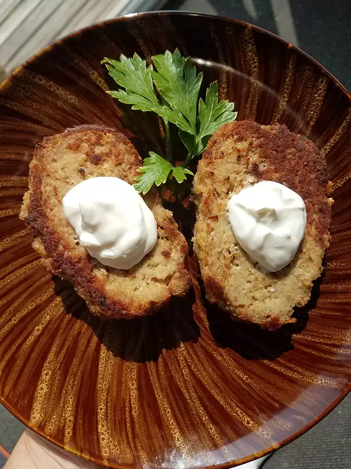

Klupskies

Description
This recipe is a family favorite that was passed down over the generations. Grandma and Pap just ate them plain, with a fork (sometimes dipped in ketchup), but our family likes to top these burgers with cheese and serve on a hamburger bun in a the traditional way. I have also seen these referred to as Kotlety Mielone. These can also be cooked on the grill.
Ingredients:
- 1 pound ground beef
- 1 small onion, diced
- ½ green pepper, diced
- 1 egg
- 2 tablespoons ketchup
- ¼ teaspoon sea salt
- 2 slices white bread, torn into small pieces
- 1 serving cooking spray with olive oil
Steps:
- Mix ground beef, onion, green pepper, egg, ketchup, and sea salt together in a bowl; mix in the white bread pieces until evenly distributed. Form the mixture into 4 patties.
- Spray a large skillet with olive oil cooking spray and set over medium heat. Cook the burgers until well-browned on the bottoms, about 10 minutes; flip the burgers and cook until the meat is no longer pink and the juices run clear, 8 to 10 more minutes.